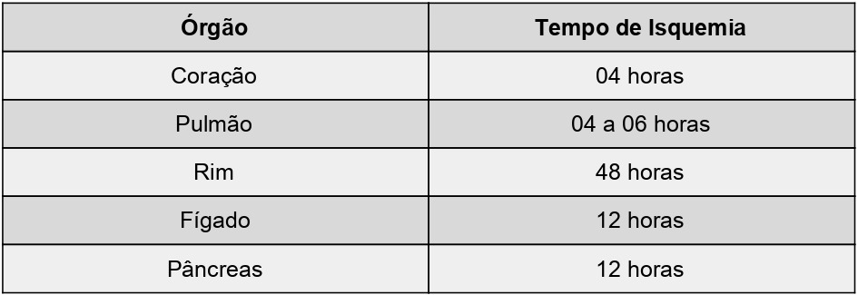

Doação de órgãos é um ato nobre que pode salvar vidas. Muitas vezes, o transplante de órgãos pode ser única esperança de vida ou a oportunidade de um recomeço para pessoas que precisam de doação.
Para ser um doador, basta conversar com sua família sobre o seu desejo de ser doador e deixar claro que eles, seus familiares, devem autorizar a doação de órgãos. No Brasil, a doação de órgãos só será feita após a autorização familiar.
A morte encefálica é a perda completa e irreversível das funções encefálicas (cerebrais), definida pela cessação das funções corticais e de tronco cerebral, portanto, é a morte de uma pessoa.
A constatação da morte encefálica deverá ser feita por médicos com capacitação específica, observando o protocolo estabelecido.
O tempo de isquemia é o tempo de retirada de um órgão e transplante deste em outra pessoa.
Os locais de coletas são hospitais que notificam a Central de Notificação Captação e Distribuição de Órgãos e Tecidos (CNCDO), quando há falência da atividade cerebral irreversível e a família concorda em doar os órgãos do parente. Para saber mais Clique aqui!